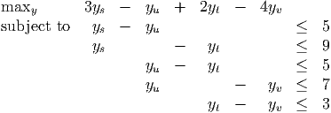

Let A be an n × n matrix satisfying:
- aij ≥ 0 if i≠j, for 1 ≤ i ≤ n and 1 ≤ j ≤ n,
- and ∑ i=1na ij = 0 for j = 1,…,n.
Show the following:
- Let ∈ ℝn. Assume the smallest component of is k, so k ≤i for i = 1,…,n. Show ∑ i=1na iki ≥0.
- Show the linear program

is infeasible, where e denotes the vector of ones.
- What can you say about the set {x ∈ ℝn : Ax = 0,x ≥ 0}?
Solutions:
- We have
- For any y ∈ ℝn, let y
k be the smallest component of y. We have so (AT y) k ⁄≤-1, so AT y ⁄≤-e.
- The dual LP to the infeasible problem in part (b) is
This problem is feasible (take x = 0), so it is unbounded. So there exists a nonzero x in the given set.
In the single commodity network flow problem in the figure, nodes s and t are supply nodes and nodes u and v are demand nodes. The supplies available are bs = 3 and bt = 2. The demands are du = 1 and dv = 4. The unit shipping costs for each edge are indicated in the figure.

An initial basic feasible solution can be obtained by taking xsu, xut, and xtv to be basic, and xst, xuv to be nonbasic.
- (5 points) What is the initial basic feasible solution?
- (15 points) What are the primal and dual linear programs? Find a dual solution that satisfies complementary slackness. Show your dual solution is not dual feasible.
- (15 points) Make a simplex pivot to improve your primal solution. What is the updated dual solution? Is the new solution optimal?
Solutions:
- xsu = 3, xut = 2, xtv = 4, xst = xuv = 0.
- Total supply and total demand are both equal to 5, so we can use equality constraints in
the primal LP. Primal LP:
Dual LP:
 From complementary slackness, need y to satisfy
One solution is yv = 0, yt = 3, yu = 8, ys = 13. This violates the second and fourth dual constraints, each by one unit.
- We use network simplex to make the pivot. We choose edge (s,t) to enter the basis
(using the edge (u,v) instead is similar). The fundamental cycle also includes edges
(s,u) and (u,t). The values of the variables with different choices Δ for the incoming
basic variable is indicated in the figure:

Largest possible value of Δ = 2, and edge (u,t) leaves the basis. Get new bfs as indicated in the figure:

From complementary slackness, need y to satisfy:
One solution is yv = 0, yt = 3, ys = 12, yu = 7, which is dual feasible. Therefore, the new bfs is primal optimal, and the given dual solution is dual optimal.
The numbers on the edges in the following graph represent the probability of failure of an edge. Edges fail independently of one another.

For a price, we can reinforce an edge so that its probability of failure drops to zero. We want to ensure that a path exists between s and t with high probability. More precisely, we want to ensure that, for each cutset,
 | (1) |
A cutset consists of all edges leading from P to Q, where P and Q form a partition of the vertices with s ∈ P and t ∈ Q, so
|
| (2) |
Two possible partitions are:
- P1 = {s}, Q1 = {t,u,v,w}. Edges from P1 to Q1 are (s,u), (s,v). Probability both edges in the cutset fail is 0.2 × 0.1 = 0.02 ≥ 0.01, so at least one edge in the cutset must be reinforced.
- P2 = {s,u,v,w}, Q2 = {t}. Edges from P2 to Q2 are (v,t), (w,t). Probability both edges in the cutset fail is 0.2 × 0.1 = 0.02 ≥ 0.01, so at least one edge in the cutset must be reinforced.
We introduce variables
|
| (3) |
In order to ensure the solution x satisfies the constraint (1) for the cutset given by P1 and Q1, we can impose the constraint
Similarly, we can impose the constraint
corresponding to the other cutset. For a general graph, there may be a large number of possible cutsets, so we add the corresponding constraints as needed. The initial LP relaxation is as follows, where the objective function coefficients correspond to the costs of reinforcing a particular edge:
|
| (4) |
- (5 points) Show that the solution to the initial relaxation is xsv = xwt = 1, with all other xe = 0.
- (10 points) Find a cutset that leads to a valid inequality that is violated by the solution in part 3a.
- (5 points) Show that xsu = xwt = 1 with all other xe = 0 is feasible after the new valid inequality is added to (4).
- (15 points) Construct the dual LP to the new problem obtained by adding the constraint to (4). Find a dual solution that satisfies complementary slackness. Is your solution optimal?
Solution:
- Trivial.
- Choose P = {s,v}, Q = {t,u,w}. The edges going from P to Q are (s,u), (v,t)
and (v,w).

The product of the probabilities of failure of the three edges in the cutset is
so we must reinforce at least one edge in this cutset in order to satisfy constraint (1). This gives the valid constraint
(5) which is violated by the solution given in part (a).
- The updated primal LP is

(6) and the given solution is feasible in this LP, with value 6.
- The dual LP is
From complementary slackness, we need
This system has multiple solutions, including y = (2, 3, 1) and (1, 3, 2), both of which are feasible in the dual problem. Since we have primal and dual feasibility as well as complementary slackness, we are optimal.
The general set of dual optimal solutions has the form y = (1 + z, 3, 2 - z) for 0 ≤ z ≤ 1.